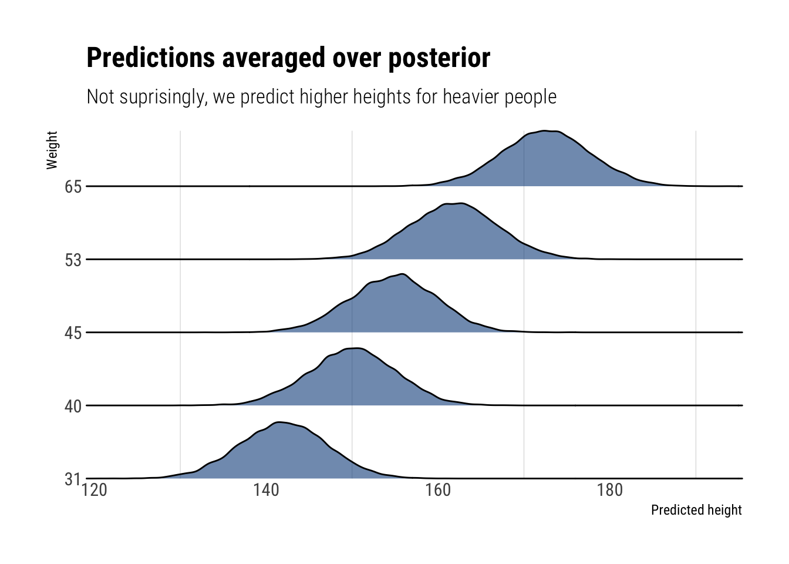
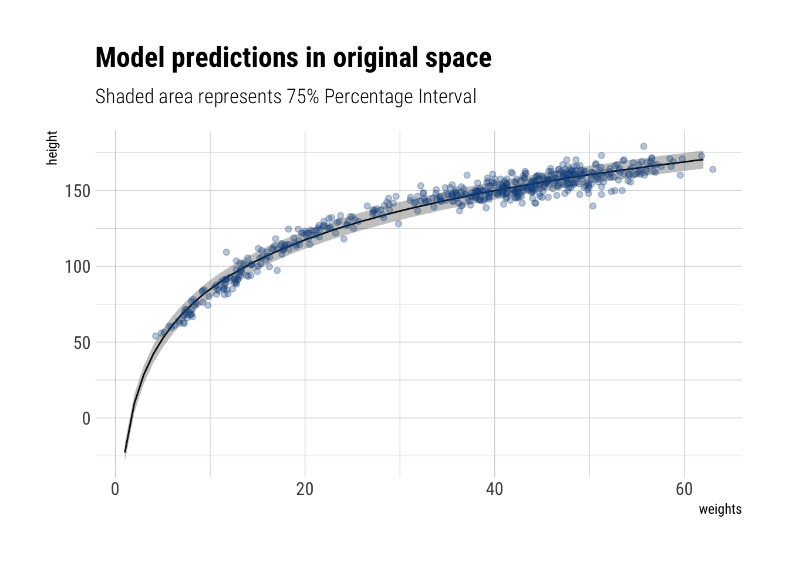
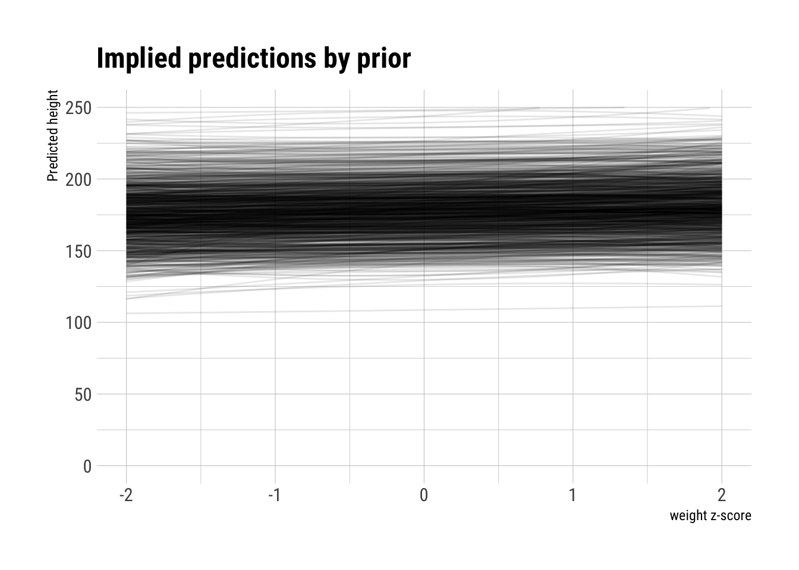
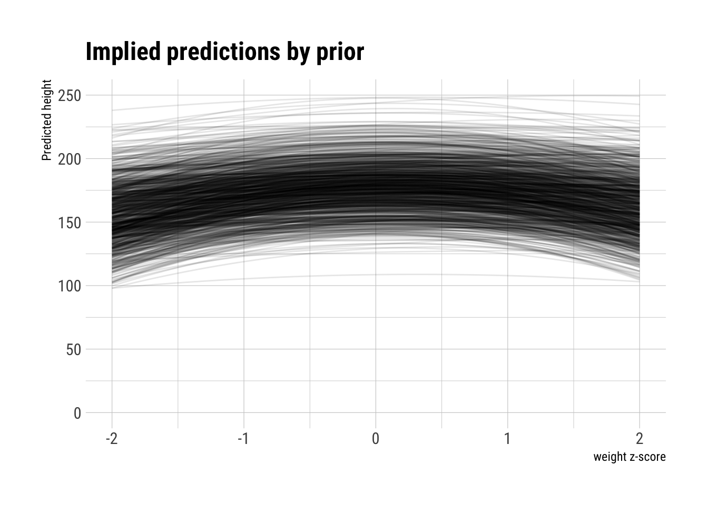
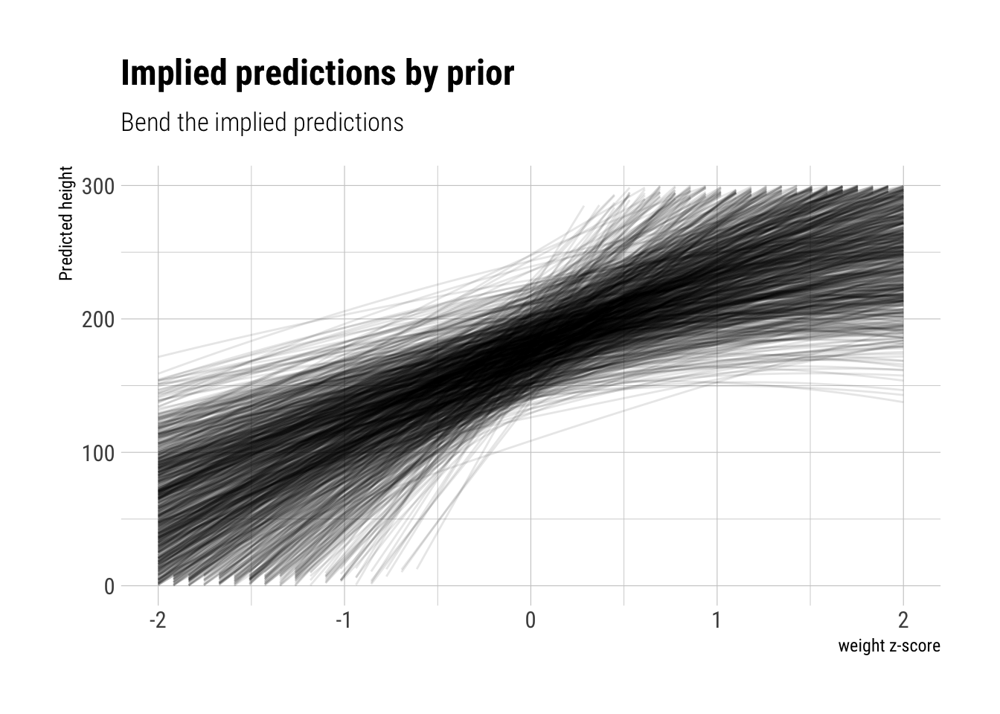

library(rethinking)
library(tidyverse)
library(ggridges)
extrafont::loadfonts(device="win")
set.seed(24)data("Howell1")
precis(Howell1) mean sd 5.5% 94.5% histogram
height 138.2635963 27.6024476 81.108550 165.73500 ▁▁▁▁▁▁▁▂▁▇▇▅▁
weight 35.6106176 14.7191782 9.360721 54.50289 ▁▂▃▂▂▂▂▅▇▇▃▂▁
age 29.3443934 20.7468882 1.000000 66.13500 ▇▅▅▃▅▂▂▁▁
male 0.4724265 0.4996986 0.000000 1.00000 ▇▁▁▁▁▁▁▁▁▇Week 2
Week 2 has gotten us to start exploring linear regression from a bayesian perspective. I found it the most interesting to propagate uncertainty through the model.
Homework
The weights listed below were recorded in the !Kung census, but heights were not recorded for these individuals. Provide predicted heights and 89% compatibility intervals for each of these individuals.
tibble(individual = seq(1, 5), weight = c(45, 40, 65, 31, 53),
expected_height = NA, left_interval = NA, right_interval = NA) -> to_predict
to_predict# A tibble: 5 × 5
individual weight expected_height left_interval right_interval
<int> <dbl> <lgl> <lgl> <lgl>
1 1 45 NA NA NA
2 2 40 NA NA NA
3 3 65 NA NA NA
4 4 31 NA NA NA
5 5 53 NA NA NA The model
We will fit a linear regression between the weight and the height. Thus, we will predict the aforementioned individuals. The model will have a normal likelihood:
\[ height_i \sim Normal(\mu_i, \sigma) \] \[ \mu_i = \alpha + \beta (weight_i - \bar{weight}) \] And the following priors:
\[ \alpha ~ Normal(178, 20) \]
\[ \beta \sim LogNormal(0, 1) \]
\[ \sigma \sim Uniform(0, 50) \]
Which translates in code thus:
# only keep the adults in the sample
data <- Howell1 %>% filter(age >= 18)
# mean to later on center weight at 0
xbar <- mean(data$weight)
# fit the model
model_linear <- quap(
alist(
height ~ dnorm(mu, sigma),
mu <- a + b*(weight - xbar),
a ~ dnorm(178, 20),
b ~ dlnorm(0, 1),
sigma ~ dunif(0, 50)
),
data = data
)The model fitted is:
precis(model_linear) mean sd 5.5% 94.5%
a 154.601367 0.27030759 154.1693633 155.033371
b 0.903281 0.04192362 0.8362789 0.970283
sigma 5.071880 0.19115465 4.7663775 5.377382That is, a multivatiate normal with the above means and the following var-cov matrix:
vcov(model_linear) a b sigma
a 7.306619e-02 -4.243897e-08 6.157797e-05
b -4.243897e-08 1.757590e-03 -2.518310e-05
sigma 6.157797e-05 -2.518310e-05 3.654010e-02Now, let’s compute the expected height, according to our model, for the aforementioned individuals:
mu <- sim(model_linear, data = to_predict, n = 10000)Now, we have samples from the posterior with all the required parameters (\(\alpha, \beta, \sigma\)) to predict our model’s expected height for each of the individuals. Let’s fill the table:
to_predict$expected_height <- apply(mu, 2, mean)
whole_interval <- apply(mu, 2, PI, prob = 0.89)
to_predict$left_interval <- whole_interval[1,]
to_predict$right_interval <- whole_interval[2,]
round(to_predict, 2)# A tibble: 5 × 5
individual weight expected_height left_interval right_interval
<dbl> <dbl> <dbl> <dbl> <dbl>
1 1 45 155. 147. 163.
2 2 40 150. 142. 158.
3 3 65 173. 164. 181.
4 4 31 142. 134. 150.
5 5 53 162. 154. 170.Let’s visualize our predictions
computed_with_samples <- data.frame(mu, index = seq(1, length(mu)))
colnames(computed_with_samples) <- c(45, 40, 65, 31, 53, "index")
computed_with_samples%>%
pivot_longer(-index) %>%
rename("individual" = name,
"prediction" = value) %>%
ggplot(aes(y = individual, x = prediction)) +
geom_density_ridges(scale = 0.8, fill = "dodgerblue4", alpha = 0.6) +
scale_y_discrete(expand = c(0, 0)) + # will generally have to set the `expand` option
scale_x_continuous(expand = c(0, 0)) + # for both axes to remove unneeded padding
coord_cartesian(clip = "off") + # to avoid clipping of the very top of the top ridgeline
hrbrthemes::theme_ipsum_rc(grid = "x") +
labs(title = "Predictions averaged over posterior",
subtitle = "Not suprisingly, we predict higher heights for heavier people",
x = "Predicted height",
y = "Weight")
ggsave("ridges.png")Model the relationship between height and the natural logarithm of weight using the entire data.
data <- Howell1Thus, the model we will be working with will be:
We will fit a linear regression between the weight and the height. Thus, we will predict the aforementioned individuals. The model will have a normal likelihood:
\[ height_i \sim Normal(\mu_i, \sigma) \]
\[ \mu_i = \alpha + \beta (log(weight_i) - log(\bar{weight_i})) \] And the following priors:
\[ \alpha ~ Normal(178, 20) \]
\[ \beta \sim LogNormal(0, 1) \]
\[ \sigma \sim Uniform(0, 50) \]
data %>%
mutate(log_weight = log(weight)) -> data_with_log
x_bar <- mean(data_with_log$log_weight)
log_model <- quap(
alist(
height ~ dnorm(mu, sigma),
mu <- a + b*(log_weight ),
a ~ dnorm(178, 20),
b ~ dlnorm(0, 1),
sigma ~ dunif(0, 50)
),
data = data_with_log
)Let’s check the mean of the parameters of the posterior:
precis(log_model) mean sd 5.5% 94.5%
a -22.874419 1.3343063 -25.006898 -20.741940
b 46.817810 0.3823284 46.206776 47.428845
sigma 5.137147 0.1558892 4.888006 5.386288And the var-cov:
vcov(log_model) a b sigma
a 1.780373247 -0.503145565 0.008933974
b -0.503145565 0.146175019 -0.002528771
sigma 0.008933974 -0.002528771 0.024301445Now, let’s plot our predictions for the range of weights that we have.
weights <- log(1:max(data$weight))
predictions_from_posterior <- sim(log_model, data.frame(log_weight = weights), 10000)
mu <- apply(predictions_from_posterior, 2, mean)
interval <- apply(predictions_from_posterior, 2, PI, prob = 0.75)
left_interval <- interval[1,]
right_interval <- interval[2,]
tibble(weights = exp(weights),
mu,
left_interval,
right_interval) %>%
ggplot(aes(weights, mu)) +
geom_line() +
geom_ribbon(aes(ymin = left_interval, ymax = right_interval), alpha = 0.3) +
geom_point(data = data_with_log, aes( x = weight, y = height), alpha = 0.3,
color = "dodgerblue4") +
hrbrthemes::theme_ipsum_rc() +
labs(title = "Model predictions in original space",
subtitle = "Shaded area represents 75% Percentage Interval",
y = "height")
Plot the prior predictive distribution for the polynomial regression model of height
So, let’s suppose that we are planning to fit the following model to the data. First, we would work with standardize weights.
\[ height_i \sim Normal(\mu_i, \sigma) \]
\[ \mu_i = \alpha + \beta_1 * weight_s + \beta_2 weight_s^2 \] And the following priors:
\[ \alpha ~ Normal(178, 20) \]
\[ \beta_1 \sim LogNormal(0, 1) \]
\[ \beta_2 \sim dnorm(0, 1) \]
\[ \sigma \sim Uniform(0, 50) \]
What predictions do the priors we set are implying? To find out, let’s sample from them:
N <- 1000
a <- rnorm(N, 178, 20)
b1 <- rlnorm(N, 0, 1)
b2 <- rnorm(N, 0, 1)Now, let’s plot them:
plot_priors <- function(N, a, b1, b2) {
weights <- seq(-2, 2, length.out = 50)
data.frame(simulation = seq(1, N), intercept = a, first = b1, second = b2) %>%
mutate(prediction = pmap(list(intercept, first, second), function(first, second, third) first[1] + weights*second + weights^2*third)) %>%
unnest() %>%
mutate(weight = rep(weights, N)) %>%
ggplot(aes(x = weight, y = prediction, group = simulation)) +
geom_line(alpha = 0.1) +
ylim(c(0, 250)) +
hrbrthemes::theme_ipsum_rc() +
labs(y = "Predicted height",
title = "Implied predictions by prior",
x = "weight z-score")
}
plot_priors(N, a, b1, b2)
The curves have hardly any bent at all, which is what we would like to see knowing the polynomial relationship between height and weight. Let’s try to put an uniform negative prior on the \(b_2\) coefficient:
negative_b2 <- runif(N, min = -10, max = 0)plot_priors(N, a, b1, negative_b2)
However, the curves start to bend down to quickly. Let’s change the prior on \(b_1\) too:
b1_larger <- rlnorm(N, 4, 0.5)plot_priors(N, a, b1_larger, negative_b2) +
ylim(c(0, 300)) +
labs(subtitle = "Bend the implied predictions")
ggsave("prior.png")We bent them! However, we created a prior that implies impossible predictions. This is very hard to set as the parameters should be set jointly. However, we are not considering any correlation between the samples.